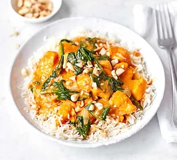
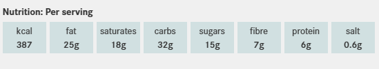
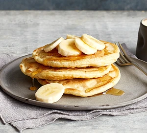
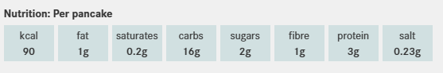
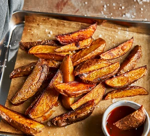

Sweet Potato & peanut curry
Ingredients
- 1 tbsp coconut oil
- 1 onion, chopped
- 2 garlic cloves, grated
- thumb-sized piece ginger, grated
- 3 tbsp Thai red curry paste
- 1 tbsp smooth peanut butter
- 500g sweet potato,
peeled and cut into chunks - 400ml can coconut milk
- 200g bag spinach
- 1 lime, juiced
- cooked rice, to serve (optional)
- dry roasted peanuts, to serve (optional)
Recipe
- STEP 1
Melt 1 tbsp coconut oil in a saucepan over
a medium heat and soften 1 chopped onion.
Add 2 grated garlic cloves
and a grated thumb-sized piece of ginger,
and cook for 1 min until fragrant. - STEP 2
Stir in 3 tbsp Thai red curry paste,
1 tbsp smooth peanut butter
and 500g sweet potato,
then add 400ml coconut milk
and 200ml water - STEP 3
Bring to the boil,
turn down the heat
and simmer for 25-30 mins. - STEP 4
Stir through 200g spinach
and the juice of 1 lime, and season well.
Serve with cooked rice,
and if you want some crunch,
sprinkle over a few dry roasted peanuts.


Vegan Pancakes
Ingredients
- 300g self-raising flour
- 1 tsp baking powder
- 1 tbsp sugar
- 1 tbsp vanilla extract
- 400ml plant-based milk
- 1 tbsp vegetable oil
- banana slices, blueberries,
maple syrup, vegan chocolate chips
To serve (optional)
Recipe
- Whisk the flour, baking powder, sugar,
vanilla extract and a pinch of salt in a bowl.
Slowly pour in the milk until
you get a smooth, thick batter. - Heat a little of the oil in a non-stick frying
pan over a medium-low heat,
and add 2 tbsp batter into the pan at a time
to make small, round pancakes.
Cook for 3-4 mins until the edges are set.
Flip the pancakes over and cook for
another 2-3 mins until golden on both sides. - Serve stacked with lots of
toppings of your choice


Potato Wedges
Ingredients
- 800g floury potatoes
- 4 tbsp sunflower oil
- 1 tsp fine sea salt
- 1 tsp sweet paprika
- 1 tbsp red wine vinegar
- ½ tsp ground black pepper
- 1 tsp coarse sea salt flakes, optional
Recipe
- Heat the oven to 220C/200C fan/gas 7.
Cut the potatoes lengthwise into sixths or eighths
with the skins on. In a bowl, mix the sunflower oil
with the paprika and salt. Add the vinegar
and the pepper, and use it to marinate the potatoes
while the oven preheats. - Line a baking sheet with parchment paper
and spread the potato wedges across it.
Roast for 30 mins until crispy and golden,
turning halfway throughs.
To serve, sprinkle with some sea salt flakes.
